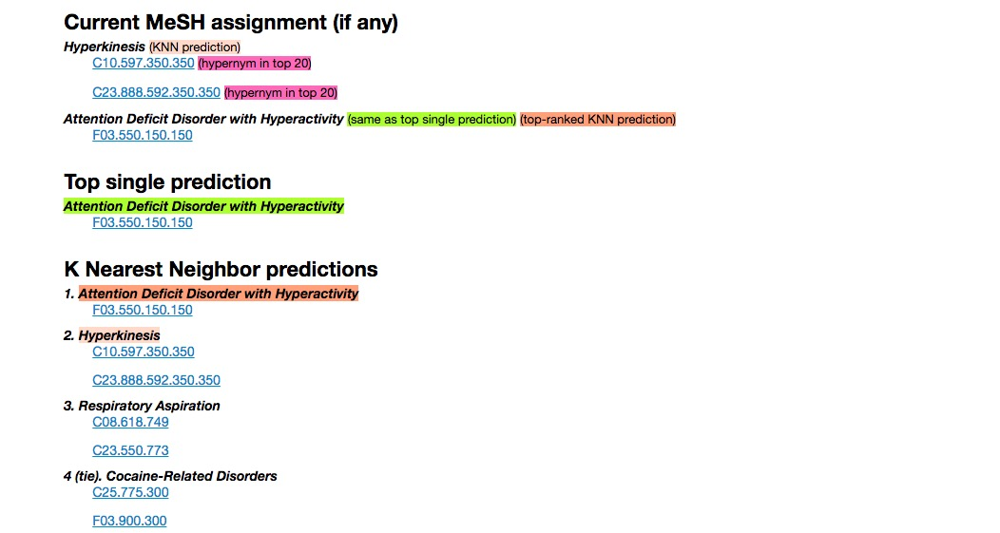
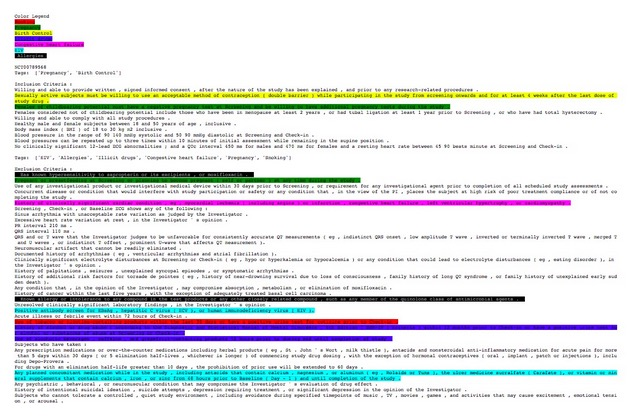

Clinical Data Visualization
With this project we created a search interface that allows users to seach for diseases or institutions and see what type of clinical trials are currently happened or have happened in those particular categories. The main target audience for this project are patients that have been diagnosed with a cerious disease and are trying to find a clinical trial they can enroll in to get help.
A lot of work went into the back end of this project including cleaning the data, deduplicating the data, and linking in more related data. You can continue on below to see some examples of these processes.
In order to support a better search interaction for the clinical trials data we decided we would need to focus three fundamental building blocks to start with. Thos three building blocks were deduplicating the institutions/facilities in the database, creating research author graph, and implementing a thesaurus of MeSH terms to common terms.
The majority of the data in the AACT database is free-text data, which has resulted in a large number of duplicated institution names. For example, Johns Hopkins University and John's Hopkins University were both very common strings referring to the same institution, with the only difference being the apostrophe character. Moreover, various departments within an institution often identified themselves as such, usually with varying acronyms, abbreviations, and punctuation marks. As such, data related to Johns Hopkins University is associated with several different keys instead of a single canonical key: the database has in fact over 260 unique strings that could be reasonably associated with the institution.
In order to properly return results in a search interface, we needed all the data related to one institution to be queryable under a single canonical string representing each institution, so that when a user searches for Johns Hopkins University they get all the results they were seeking.
It is important to have publications linked with clinical trials and institutions because peer reviewed publications are one of the best indicators of successful trials, investigators, and institutions. If, for example, an institution had a very low number of publications compared to the number of trials they had run related to a certain disease, this would be an indicator that they have not had very many successful trials in that disease category.
While there is the option to associate related publications to the records in the database, very few investigators have done so. As a result there is a very sparse record of publications linked to trials. We believe it is important to link publications drawn from an external source (PubMed) to the clinical trials in the database so that users are able to get a clearer understanding of the success a particular institution has had among the diseases in which the user is interested.
All clinical trials in the database are tagged with MeSH terms, the controlled vocabulary described in the introduction. This is great for understanding the relationships between trials, researchers, and institutions, but it is often not ideal for a search implementation because the average user does not colloquially use MeSH terms. For example, trials studying treatments for cancer use the MeSH term “neoplasm” (the medical jargon for tumor), but most laypeople have never heard of a neoplasm.
For this reason we needed a thesaurus that links MeSH terms their common names. Both terms would be synonyms on the presentation layer, so users could search for cancer and retrieve trials that are tagged with neoplasm in the database.
In order to further improve the search abilities we decided that we would need to make a couple of improvements to the data in the database. We focused on two primary improvments. Better MeSH tagging of the trials and more category tags for the eligibility criteria of the trials.
Because MeSH is a controlled vocabulary, trials can be more easily retrieved and compared when they are are tagged with all relevant MeSH terms. Over 23,000 trials, or 14% of those in the AACT database, have no MeSH condition terms associated with them, and another 51,000 trials (31% of the database) are tagged with just one condition term. This limits the usability of this data set since many searches for a particular condition will fail to retrieve all relevant results.
We developed three different classifiers (or recommenders), to assign new mesh terms to trials with few or no MeSH terms associated with them. We used a maximum entropy classifier, a series of logistic regression classifiers and a straightforward KNN model. The code for these models can be found here. An example output can be seen below.
All of the data related to trial eligibility criteria is stored as free, unstructured text in the database outside of three basic criteria. Those are age, sex and allowing healthy subjects. As a result it is not possible to filter or search trials by criteria in a meaningful way.
Our goal was to find several more eligibility criteria categories that are well represented across trials and develop a system that is able to find synonymous terms and predictors for each category. For example, the category of Birth Control has predictors such as "Fertile patients must use" and terms such as contraception or iud. Then tag all of the trials based on the new criteria categories.
We decided to take an active learning algorithm approach to expanding the concept and predictor terms for each category. We wrote a two-part algorithm: the first part is focused on finding predictor terms, and the second is focused on finding concept terms. The result of this work was tagging the trials with 7 new eligibility criteria categories as well as a new visualization of the eligibility criteria with relevant category sentences highlighed in meaningful colors. This output can be seen below and the code can be seen here.
Connect